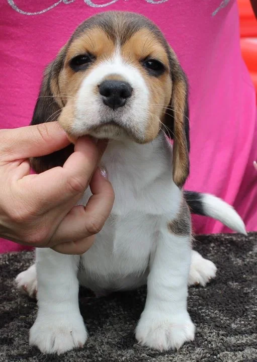
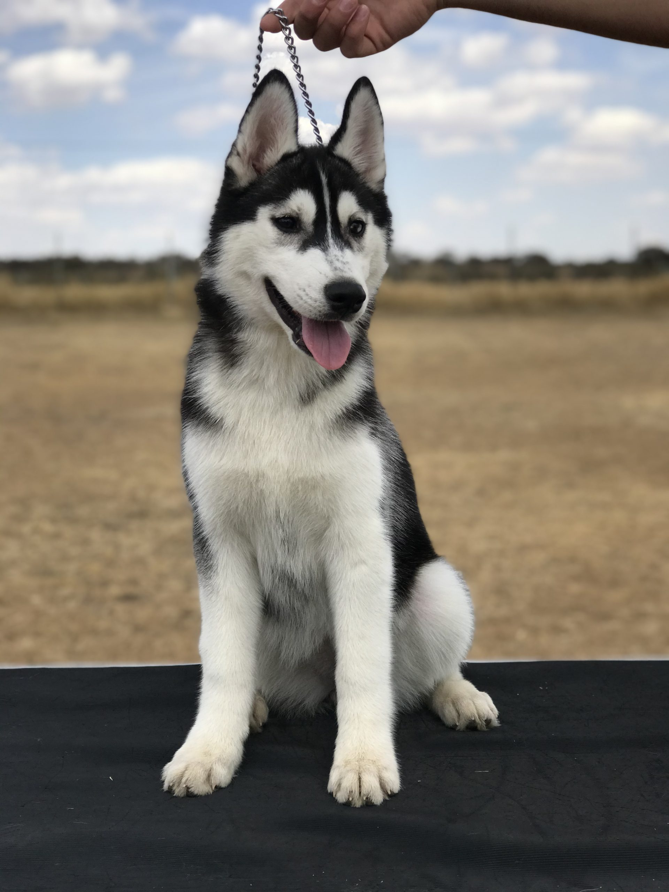
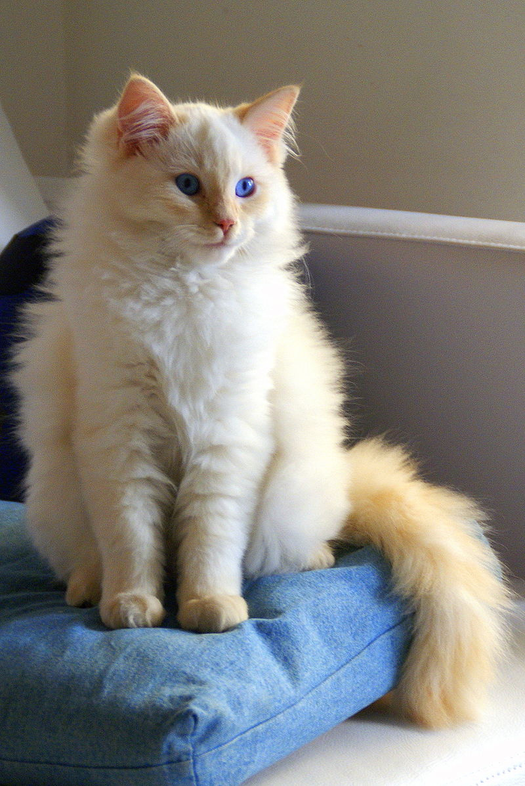
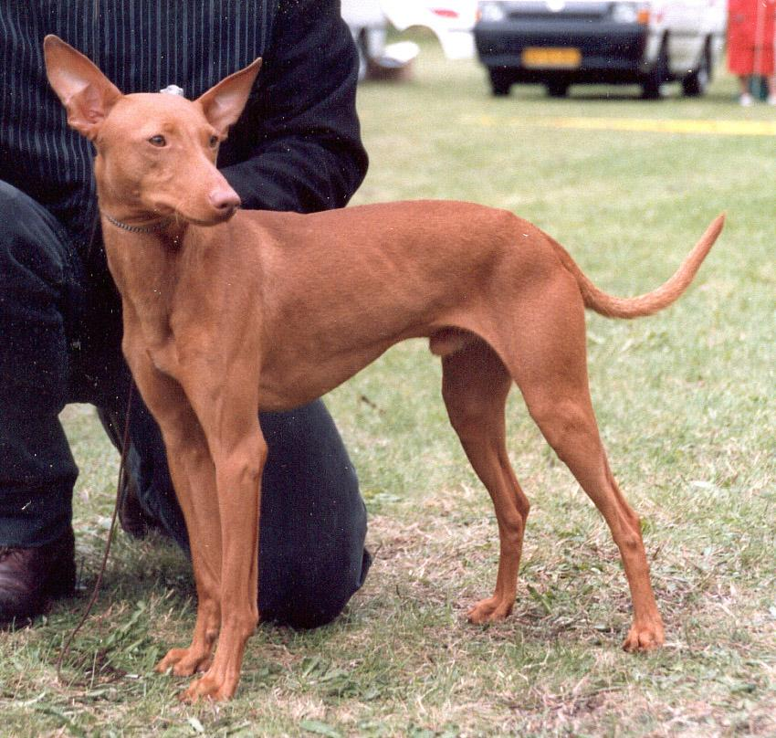
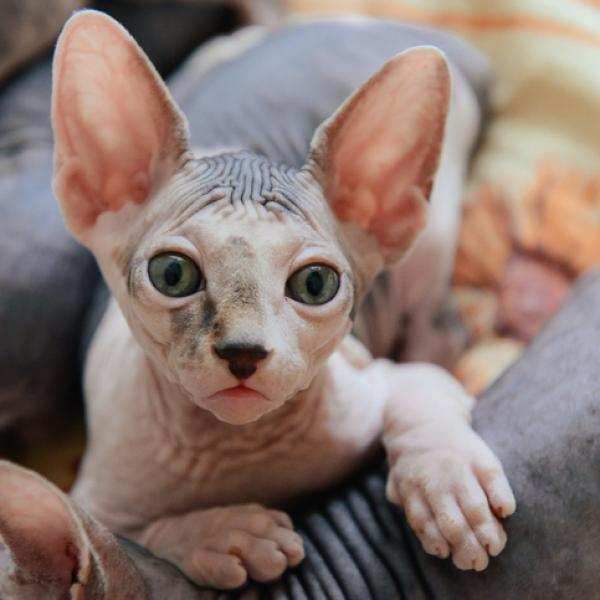
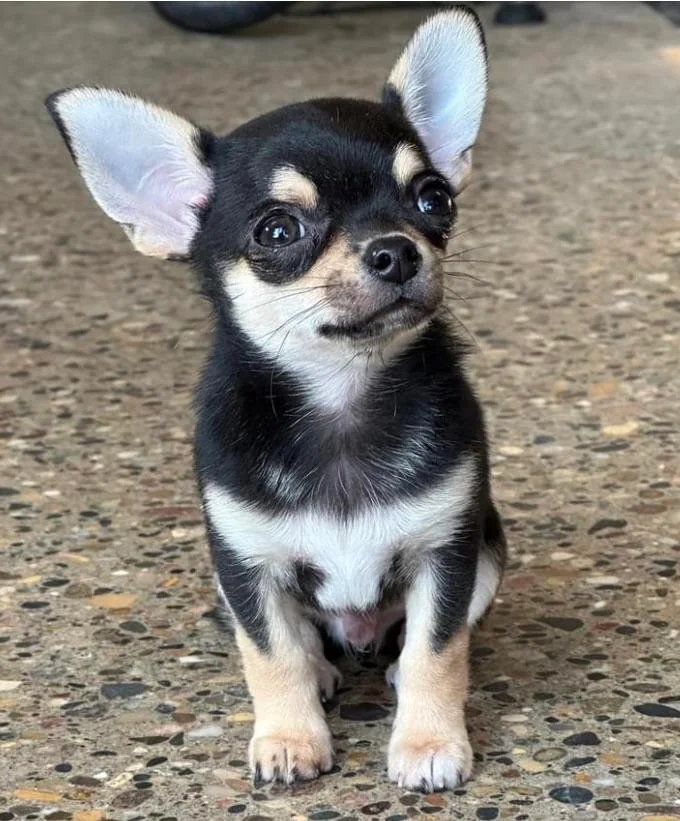
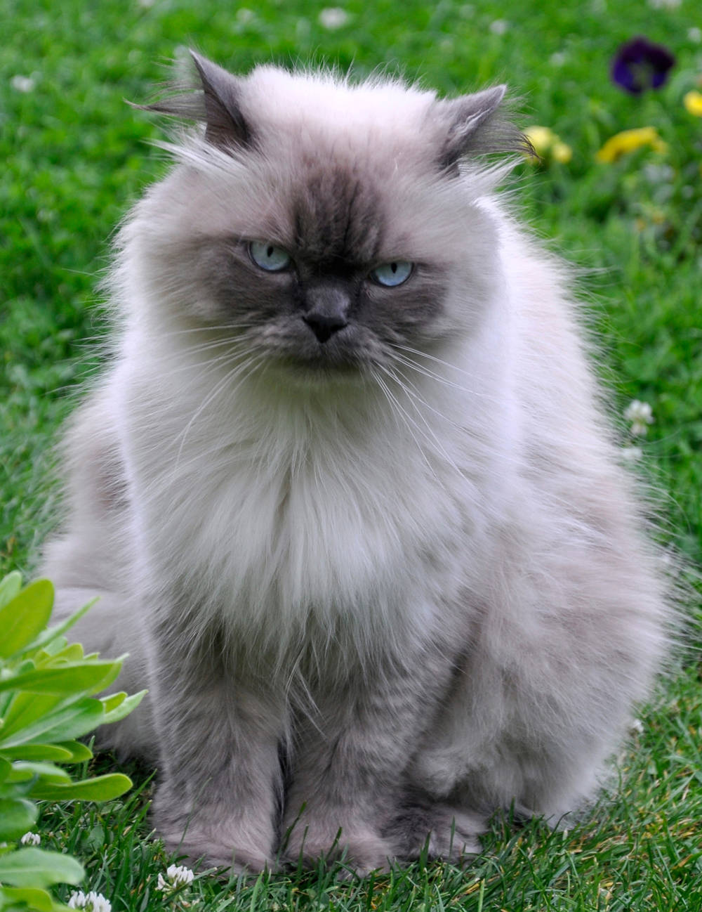
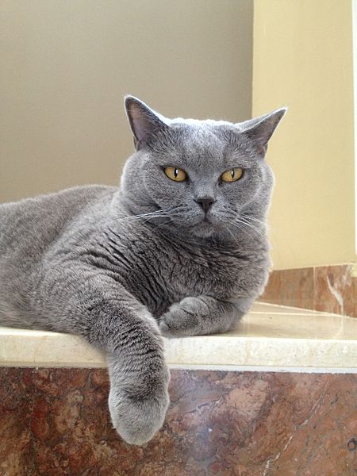
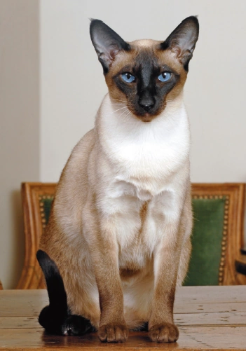

Pepe, macho, menor de un año.

Salma, hembra, menor de un año.

Filipo, macho, entre 3 a 5 años.

Cala, hembra, entre 1 a 3 años.

Macaron, macho, menor de un año.

Anubis, macho, mayor de 7 años.

Canica, hembra, entre 2 a 3 años.

Pelusa, macho, entre 1 a 3 años.

Wilson, macho, entre 4 a 6 años.

Tití, macho, entre 1 a 3 años.